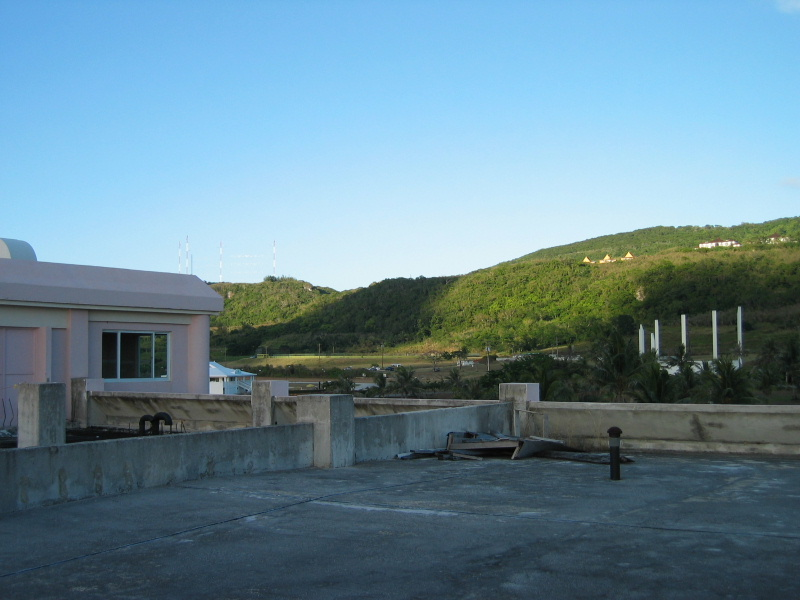
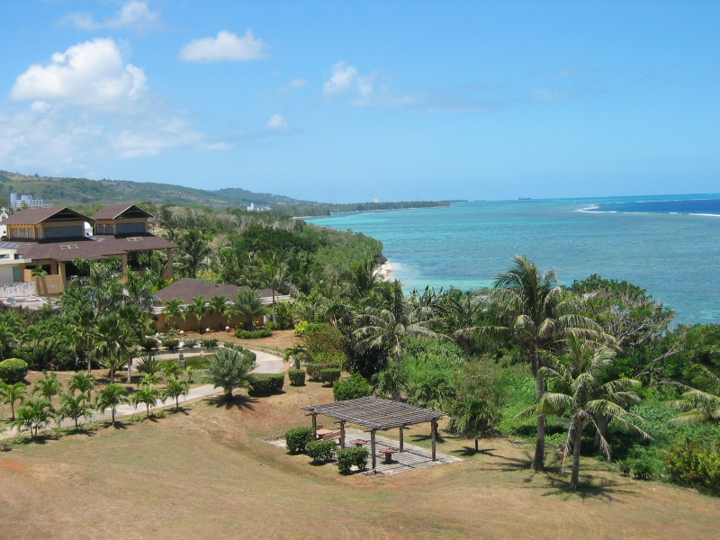
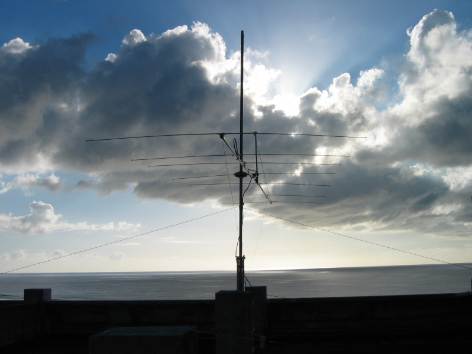
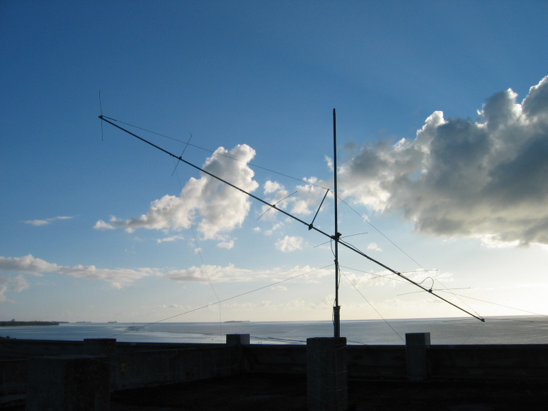
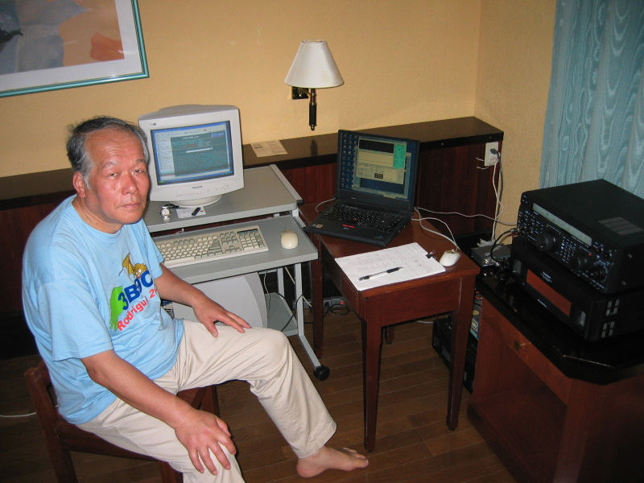
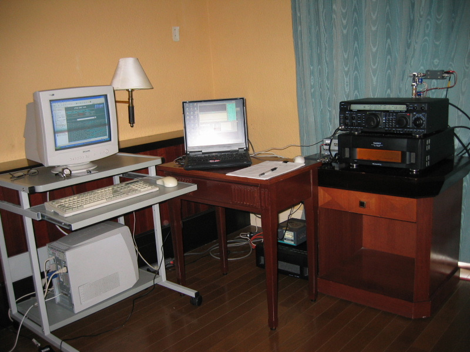
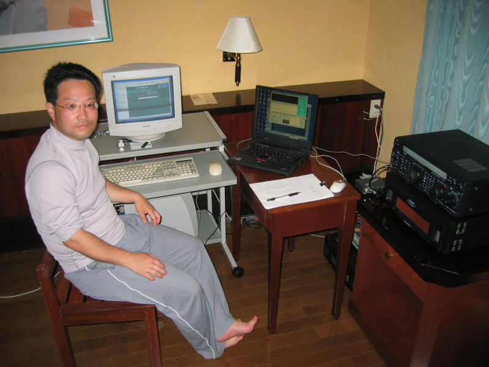
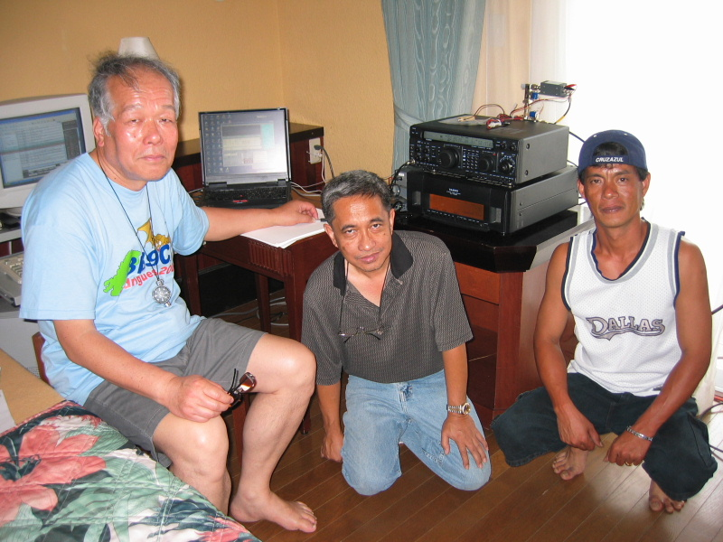

KH0/KH2K 50MHz EME

First 50MHz EME DX-Pedition
Saipan Is. 14-18.May.2005
KH0/KH2K 50MHz EME DX-pedition
DE JA1RJU
|
今回のKH0(Saipan)からの移動運用は50MHzのEME(月面反射通信)にトライするのが目的だった。 サイクル23もサンスポットの低下により50MHzでは超DXとのオープンは期待出来なくなっているこの時期に EMEによるDX-QSOの可能性を探るのは興味のあるところだった。 最近のDX-Peditionで50MHzのEMEを運用した記録としては、筆者(JA1RJU)が参加した2004年春の3B9C(1局QSO)、 2005年春のFT5XO(6局QSO)が知られているが、今回の様な50HMHzのEMEだけを目的としたDX-Peditionは初めての事。 50MHzのEME運用を行おうとしたきっかけの一つは、50MHzのEMEでは大先輩のW7GJ・LanceからKH0からのEME運用の再三にわたるリクエストだった。 彼は6mのDXCC完成まで残すところ3エンティティーとなり、未交信のKH0やT88、JD1などに出かけるJA局の情報を得ると、 相手構わずEMEの運用をリクエストするのが彼の最近の"手段"となっていた。 移動運用の情報が流れた途端にW7GJからのメールを受取ったJA局も少なくないはず。 JD1からの運用に関しては、日本の免許管理下での移動局は最大パワーが50Wと制限されている日本の事情を彼に理解してもらうのが先決だった。 結局、EMEにトライするためには日本から比較的近く大電力で運用出来るサイパン(KH0)が最適な場所だった。 サイパンには最近までバーテックスタンダード(旧・八重洲無線)の協力でマリアナ・リゾートホテル内に"レンタルシャック"が設置され、 多くのJA局が運用していたのは記憶に新しいが、残念ながら昨年2月に閉鎖されてしまった。 筆者自身も何度かKH2K/AH0のコールで楽しませて貰ったが、閉鎖後は今回が初めてのサイパン行きだった。 レンタルシャックが使えていたならEME専用のアンテナを持ち込むだけで良かったのだが、 今回は全ての機材を持ち込む本格的なDX-Peditionとなった。 装備はEME用に設計された7elのLONG BOOM(約9m)のアンテナ、FT-920+受信用PRE-AMP & VL-1000(1KW)類を持参することになった。 運用場所はマリアナ・リゾートホテルだったが、以前にレンタルシャックがあった丘の上のコテージとは違い、 海岸沿いの4階建ての建物からの運用となった。
|


|
◎ EMEアンテナの設置 宿泊場所となったマリアナ・リゾートホテルの最上階の4階の角部屋が今回のシャックとなった。 アンテナは4階の床レベルと同じ3階の屋上に設置する事になった。 月が"電離層"代わりとなるEME通信ではアンテナの高度は直接関係ないため、 出来るだけ長い時間"月が見える"位置とアンテナの向きや仰角の変更が容易に出来るこの場所が選ばれた。 今回は運用のメインとなる50MHzのアンテナを1本立ち上げるだけだが、 部屋を出て屋上のアンテナまで20歩程度で"アクセス"出来るこの部屋は、"手動ローテーター"方式には好都合な場所だった。 今回使用したアンテナは、同行したJK7TKE・福井さんが重量約7Kgの移動用軽量アンテナの設計、 製作、現地での組み立ての一切を担当してくれた。 この軽量アンテナをホテルから調達した6mほどのスチールポールを屋上の50cm角の柱にくくりつけて固定し、 軽くステーを取るだけの作業で済んだ。 地元のWH0V・Junがロープを持って応援に駆けつけてくれたのは大助りだった。 HF帯の運用は当面予定していなかったため初日のアンテナ工事はこれで終了、 サイパン到着から5時間後、すっかり日が落ちた午後7時頃には完全に出来上がった。 初日(5/14)の運用開始を待ちかねているON4IQやヨーロッパ各局とのスケジュールが始まる時間までには十分に余裕のある作業だった。
|


|
◎ 50MHz EMEはWSJTモードで運用 50MHzのEME・QSOを飛躍的に変えたのがDATA通信・WSJTの運用だ。 -30dB程度の弱い信号でも解読してくれるこの通信方式により、小型のアンテナと1KW程度のパワーで十分にEMEの通信が可能になった。 CWでの通信が主力だったひと昔前のEMEでは考えられないほどQSOは"容易"になった。 今回の移動計画もこのWSJTでのEME通信が前提となった。 50MHz帯では通常JT65Aのタイプが使われている。 K1JTにより開発されたこのプログラムは彼のHomepageから無料でダウンロード出来る。 |





|